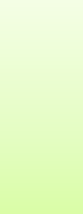
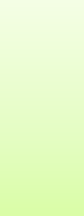
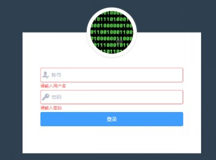
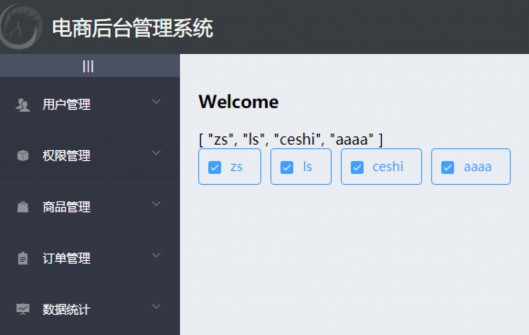
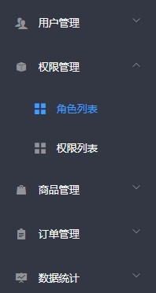

项目概述
项目初始化
登录/退出功能
主页布局

目


Contents


 1. 项目概述
1. 项目概述

根据不同的应用场景，电商系统一般都提供了 PC 端、PC 后台管理、小程序、移动 Web、移动 APP 等多种终端访问方式。
PC 端
PC后台管理
小 程 序
数据库
移动Web
移动APP
服务器

 1. 项目概述
1. 项目概述
商
品
列
表
分
类
管
理
参
数
管
理

电商后台管理系统用于管理用户账号、商品分类、商品信息、订单、数据统计等业务功能。
电商后台管理系统
用
户
登
录
退
出
登
录
用
户
管
理
权
限
管
理
角
色
列
表
权
限
列
表
商
品
管
理
订
单
管
理
数
据
统
计

 1. 项目概述
1. 项目概述

电商后台管理系统整体采用前后端分离的开发模式，其中前端项目是基于 Vue 技术栈的 SPA 项目。
后端项目
前端项目（SPA）
数据库
用户

 1. 项目概述
1. 项目概述

Vue
Vue-router
Element-UI
Axios
Echarts
Node.js
Express
Jwt
Mysql
Sequelize
项目概述
项目初始化
登录/退出功能
主页布局

目


Contents


 2. 项目初始化
2. 项目初始化

① 安装 Vue 脚手架
② 通过 Vue 脚手架创建项目
③ 配置 Vue 路由
④ 配置 Element-UI 组件库
⑤ 配置 axios 库
⑥ 初始化 git 远程仓库
⑦ 提交项目初始化版本

 2. 项目初始化
2. 项目初始化

① 安装 MySQL 数据库
② 安装 Node.js 环境
③ 配置项目相关信息
④ 启动项目
⑤ 使用 Postman 测试后台项目接口是否正常
项目概述
项目初始化
登录/退出功能
主页布局

目


Contents


 3. 登录/退出功能
3. 登录/退出功能

① 在登录页面输入用户名和密码
② 调用后台接口进行验证
③ 通过验证之后，根据后台的响应状态跳转到项目主页
http 是无状态的
通过 cookie 在客户端记录状态
通过 session 在服务器端记录状态
通过 token 方式维持状态

 3. 登录/退出功能
3. 登录/退出功能
登录页面输入用户名和密码进行登录
服务器验证通过之后生成该用户的 token 并返回
客户端存储该 token
后续所有的请求都携带该 token 发送请求
服务器端验证 token 是否通过
服务器
客户端

 


 3. 登录/退出功能
3. 登录/退出功能


通过 Element-UI 组件实现布局
el-form
el-form-item
el-input
el-button
字体图标

 3. 登录/退出功能
3. 登录/退出功能

① 通过 axios 调用登录验证接口
② 登录成功之后保存用户 token 信息
③ 跳转到项目主页
const {data: res } = await this.$http.post('login', this.loginForm)
if (res.meta.status !== 200)return this.$message.error('登录失败！')
// 提示登录成功
this.$message.success('登录成功！')
// 把登录成功的token保存到sessionStorage
window.sessionStorage.setItem('token', res.data.token)
// 使用编程式导航，跳转到后台主页
this.$router.push('/home')

 3. 登录/退出功能
3. 登录/退出功能

如果用户没有登录，但是直接通过 URL 访问特定页面，需要重新导航到登录页面。
// 为路由对象，添加 beforeEach 导航守卫
router.beforeEach((to, from, next) => {
// 如果用户访问的登录页，直接放行
if (to.path === '/login') return next()
// 从 sessionStorage 中获取到 保存的 token 值
const tokenStr = window.sessionStorage.getItem('token')
// 没有token，强制跳转到登录页
if (!tokenStr) return next('/login')
next()
})

 3. 登录/退出功能
3. 登录/退出功能

通过 ref 标注 DOM 元素
// 在 DOM 元素上通过 ref 属性标注，属性名称自定义
<div ref="info">hello</div>
通过 $refs 获取 DOM 元素
// 通过 Vue 实例的 $refs 获取标记 ref 属性的元素
let info = this.$refs.info.innerHTML
console.log(info) // hello

 3. 登录/退出功能
3. 登录/退出功能

Element-UI表单验证规则
loginFormRules: {
// 登录名称的验证规则
username: [{ required: true, message: '请输入用户名称', trigger: 'blur' }],
password: [{ required: true, message: '请输入用户密码', trigger: 'blur' }]
}
// 进行表单验证
this.$refs.loginFormRef.validate(async valid => {
// 如果验证失败，直接退出后续代码的执行
if (!valid) return
// 验证通过后这里完成登录成功后的相关操作（保存token、跳转到主页）
})

 3. 登录/退出功能
3. 登录/退出功能

基于 token 的方式实现退出比较简单，只需要销毁本地的 token 即可。这样，后续的请求就不会携带 token ，
必须重新登录生成一个新的 token 之后才可以访问页面。
// 清空token
window.sessionStorage.clear()
// 跳转到登录页
this.$router.push('/login')
项目概述
项目初始化
登录/退出功能
主页布局

目


Contents


 4. 主页布局
4. 主页布局

整体布局：先上下划分，再左右划分。
<el-container>
<!-- 头部区域 -->
<el-header></el-header>
<el-container>
<!-- 侧边栏区域 -->
<el-aside></el-aside>
<!-- 右侧主体区域 -->
<el-main></el-main>
</el-container>
</el-container>

 4. 主页布局
4. 主页布局

菜单分为二级，并且可以折叠。
<el-menu>
<el-submenu>
<!-- 这个 template 是一级菜单的内容模板 -->
<i class="el-icon-menu"></i>
<span>一级菜单</span>
<!-- 在一级菜单中，可以嵌套二级菜单 -->
<el-menu-item>
<i class="el-icon-menu"></i>
<span slot="title">二级菜单</span>
</el-menu-item>
</el-submenu>
</el-menu>
 4. 主页布局
4. 主页布局

通过 axios 请求拦截器添加 token，保证拥有获取数据的权限。
// axios请求拦截
axios.interceptors.request.use(config => {
// 为请求头对象，添加 Token 验证的 Authorization 字段
config.headers.Authorization = window.sessionStorage.getItem('token')
return config
})

 4. 主页布局
4. 主页布局

通过 v-for 双层循环分别进行一级菜单和二级菜单的渲染
通过路由相关属性启用菜单的路由功能
<el-menu router>
<el-submenu :index="item.id + ''" v-for=“item in menus" :key="item.id">
<template slot="title">
<span>{{item.authName}}</span>
</template>
<el-menu-item :index="'/' + subItem.path" v-for="subItem in item.children"
:key="subItem.id" >
<span slot="title">{{subItem.authName}}</span>
</el-menu-item>
</el-submenu>
</el-menu>